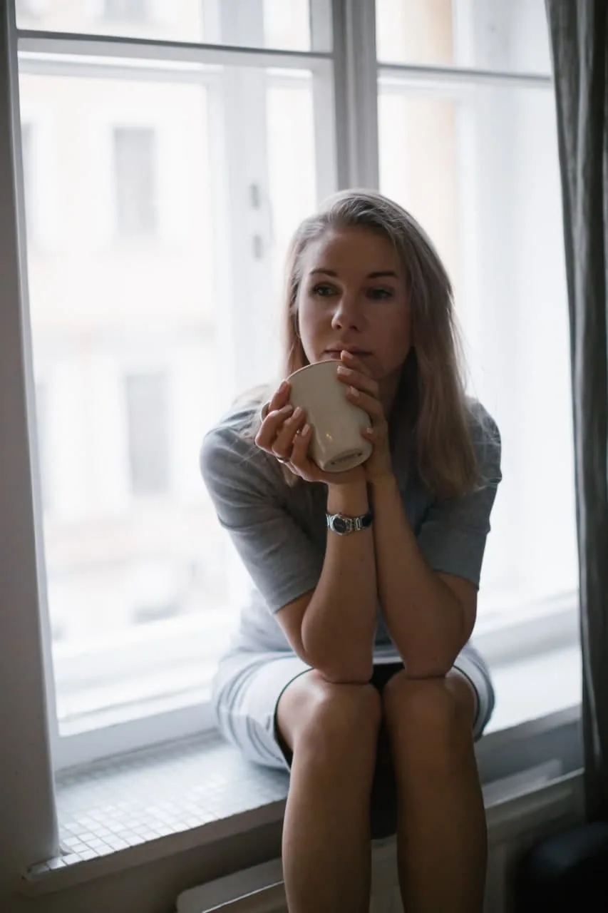
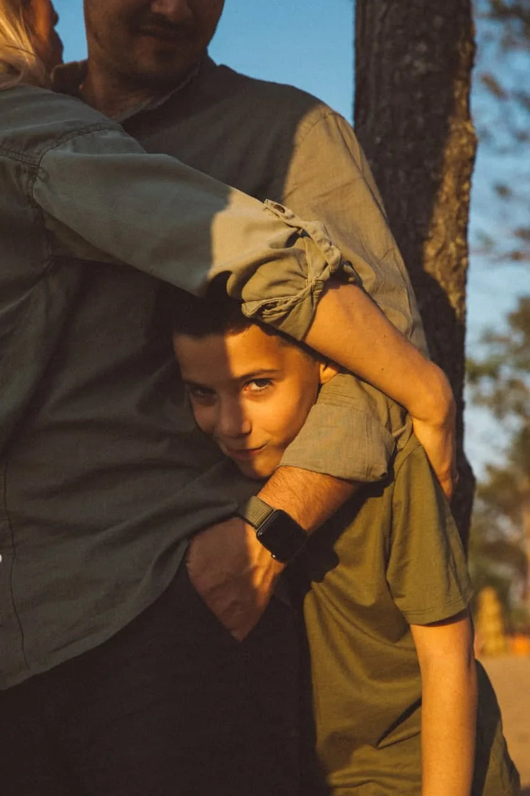

Вернуться в момент
5-4-3-2-1: заметить то, что вокруг. Отвечать ничего не нужно.
- Найди глазами пять вещей, которые видишь.
- Прислушайся к четырём звукам.
- Прикоснись к трём предметам.
- Заметь два запаха.
- Почувствуй один вкус.
— на случай бессонной ночи
Если не спится, если малыш никак не засыпает, если накрывает — здесь всё под одной рукой: тёмный экран, тихий звук, крупные кнопки. С 22:00 до 6:00 сайт включает ночник сам.
Поставь телефон подальше от кроватки — метра на два — и делай тише, чем кажется нужным. Экран можно заблокировать: шум продолжит играть.
Здравствуй. Здесь можно выдохнуть.
Я Ирина, перинатальный психолог. Здесь можно выдохнуть, разобраться с мыслью, которая не отпускает, и найти слова для близких — в любое время суток. А когда захочется поговорить с живым человеком, напиши мне.
Сейчас я, скорее всего, сплю — но всё здесь работает и в три часа ночи.
Можно не отвечать. Ответ меняет только тексты на этой странице и никуда не уходит.

Один выбор. Ничего не сохраняется и не оценивается.
Если хочется уточнить — что сейчас громче?
Можно прийти с готовым вопросом — или просто со словами «мне непросто». Выбери дверь, которая ближе.
Что бывает внутри
С чем работаем
Что бывает внутри
С чем работаем
Что бывает внутри
С чем работаем
Что бывает внутри
С чем работаем
Что бывает внутри
С чем работаем
Минута, чтобы вернуться в тело. Дыши, как удобно: остановиться можно в любой момент.
Ритм
без задержек, самый мягкий
Сколько
Вдох на 3 — выдох на 6
Если кружится голова или неприятно — сократи паузу или просто дыши в своём ритме.
Практика — возможность, а не ещё одно задание.
5-4-3-2-1: заметить то, что вокруг. Отвечать ничего не нужно.
Найти, где в теле живёт усталость, и услышать, что она говорит.
Выписать всё, что крутится, и запечатать до завтра.
Если накрывает рядом с малышом. Пять шагов, по одному на экран.
Вернуться в сегодняшний день. Тихо, без анимаций.
Когда сил на выбор мало — выберу я.
Три минуты, четыре шага. Это не тест и не диагноз — просто способ посмотреть на мысль чуть со стороны. Всё остаётся в этом окне.
Двенадцать привычных поворотов мысли. Нажми на карточку, чтобы перевернуть.
Слова для трудных разговоров — бери как есть или переделай под себя. Ничего никуда не уходит, пока ты сама не нажмёшь «отправить».

Пожалуйста, возьми коляску и погуляй с малышом полтора часа. Мне нужно спокойно принять душ и полежать в тишине.
Я тревожусь, что весь быт ляжет на меня. Мне важно знать, что мы разделим это время.
Мне сейчас не нужно, чтобы ты искал решения или успокаивал меня. Мне нужно, чтобы ты обнял меня, посидел рядом и дал мне поплакать.
Мне плохо. Я не справляюсь. Пожалуйста, приезжай как можно скорее и побудь с малышом пару часов.
Мама, мы очень ценим твою заботу и опыт. Но мы следуем рекомендациям нашего врача. Если понадобится совет — обязательно спросим. А сейчас очень поможет, если ты посидишь с малышом, пока мы пообедаем.
Это наша личная тема. Когда будет чем поделиться — мы расскажем сами.
Мы будем рады видеть вас чуть позже. Сейчас больше всего поможет готовая еда у двери и сообщение вместо звонка.
Спасибо за заботу. Мы с педиатром уже выбрали, как будем делать, — если понадобится совет, мы спросим.
Мне неприятно, когда трогают мой живот без разрешения.
Спасибо, но я не хочу обсуждать набранные килограммы.
Спасибо за беспокойство. У меня непредвиденные семейные обстоятельства, и я не готова это обсуждать. Давай вернёмся к проекту.
Про планы на декрет я пока говорить не готова. Когда будет понятно, я сама расскажу руководителю.
Я знаю, что ты хочешь меня поддержать, но эти слова сейчас делают мне очень больно. Пожалуйста, не говори так. Мне лучше, чтобы мы просто помолчали.
У нас случилось несчастье, мы потеряли ребёнка. Нам сейчас очень тяжело. Пожалуйста, не звоните и не задавайте вопросов. Мы сами выйдем на связь, когда будем готовы.
У меня произошла тяжёлая личная утрата. Мне нужны больничный или отгулы до [дата], чтобы восстановиться. Очень прошу не рассказывать подробности коллективу.
Коллеги, моя беременность прервалась. Мне сейчас очень больно говорить об этом. Самая большая помощь для меня — не поднимать эту тему и дать мне просто работать. Спасибо за понимание.
Схема просьбы: «Когда [что происходит], я чувствую [чувство], потому что мне важно [потребность]. Можешь, пожалуйста, [одно конкретное действие]?»
Короткие фразы, на которые можно опереться, когда своих слов не хватает. Вытяни одну — или столько, сколько нужно.
Я клинический, перинатальный и семейный психолог. Работала в центре планирования семьи «Медика» и в роддоме имени профессора Снегирёва. Отдельно училась помощи при бесплодии и ВРТ, работе с горем и утратой, с травмой отношений с родителями.
Ко мне можно прийти одной или вдвоём — очно в Петербурге или онлайн из любой страны. В моей работе нет одного сценария для всех: подход я подбираю в разговоре с тобой.
Всё, что есть на этой странице, — из моей практики и из моего бота: те же слова, те же упражнения, тот же темп.
Нажми на документ, чтобы рассмотреть.
Мой Telegram-бот — для дней между встречами: дневник из пяти маячков, короткие практики, статьи по этапам и кнопка SOS.
В боте отвечает ИИ-ассистент, а не я лично. Он говорит в духе моего подхода, но он не я и не врач. Мне лично — в Telegram: @irinaoshemetkova.
Можно прийти без готового запроса. Со словами «мне непросто» — уже достаточно.
50 минут4 000 ₽онлайн или очно в Петербургеможно вдвоём
Стоимость и формат уточняются при записи — в том числе для встречи вдвоём.
Перед встречей
Не нужно сдавать экзамен на умение говорить о себе.
Так увидит Ирина
Ирина, здравствуйте! Хотела бы записаться на консультацию. Подскажите, пожалуйста, ближайшие свободные даты?
Сообщение уйдёт, только когда ты сама нажмёшь «отправить». Я отвечаю сама, между встречами, — не мгновенно. Если плохо прямо сейчас — номера помощи здесь.
Да. Не нужно готовить речь или «правильный» запрос. Можно начать с «мне трудно об этом говорить» — дальше разберёмся вместе.
Договариваемся о времени и удобной видеосвязи. Нужны 50 минут и место, где можно говорить свободно.
Да. Я работаю с парами — и при планировании, и после рождения малыша, и после утраты. Формат и стоимость обсудим при записи.
Нет. Отношения, границы, усталость, родители — это тоже про тебя.
Зависит от запроса и твоего темпа. На первой встрече обсудим ожидания. Решение о продолжении — всегда за тобой.
Написать можно в любое время, но я не на дежурстве и могу ответить не сразу. Если плохо прямо сейчас — вот номера, где ответят сразу.
Ничего, пока ты сама не включишь память. Даже тогда — только в этом браузере, и стереть всё можно одной кнопкой внизу страницы.